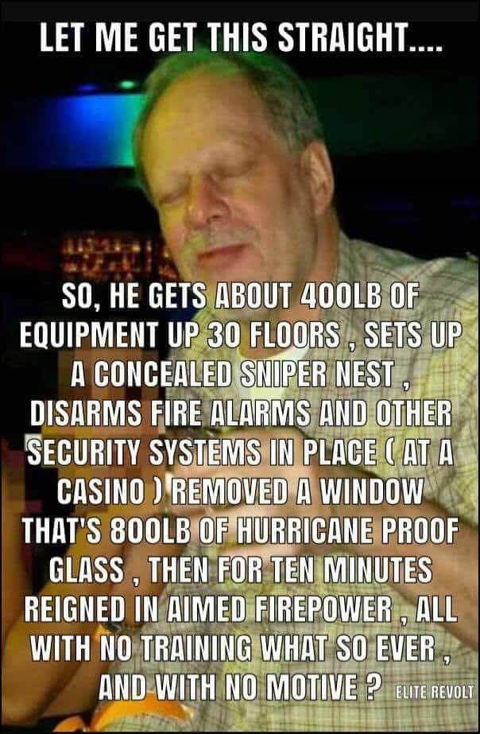

Luke Stranahan is an engineer by trade and an armed patriot by inclination. He writes for Return of Kings as a leisure pursuit and an attempt to do his part to help reverse the slide into moral decrepitude of modern society. Follow him on Twitter.


Here we go again. Although I was hoping we’d make it out of 2017 without some mass shootings, we picked up one last weekend on Sunday night on the Las Vegas Strip, where a gunman began shooting from a hotel room into an outside-venue concert across the Strip and continued until the police battered in the hotel room door to find him dead. Many, many questions have been asked about these events, and there aren’t answers to be had. We’ll talk today about some of the details that have emerged, the theories, and the government spin.
Although it’s undergone some revision, the current reports have it that the gunman, one Stephen Craig Paddock (have to use all three names, for some reason, when talking about serial killers, assassins, and the like) had a lot of weapons in his hotel room, but none of them were fully automatic. This was after CNN desperately drummed up some experts saying how easy it is to convert a semi-auto AR-15 into a fully auto version.
Folks, as I come off hiatus to once again don the ROK Gun Writer hat, I can assure you that it is, in fact, NOT easy to modify an AR-15 into a fully automatic rifle, or, to be more precise, a select fire rifle. The serialized (as in, has the official “number” of the gun) part is the lower receiver. That is “the gun” and everything else is a part bolted onto “the gun.” You can buy registered fully automatic guns (discussed in a bit) and registered fully automatic capable parts, but those parts will not fit in an AR-15 lower receiver as there is extra aluminum there on purpose to block them.
The idea is to make it as mechanically difficult to mount full auto hardware in a semi-auto receiver as it is to just make a new receiver on a mill. That requires skill, and time, and good machinery to do. It’s easier (but more expensive) to undergo the background checks, get permission from the government, and buy one of the “transferable” machine guns that are now all over 30 years old, pre-dating the 1986 legislation stopping the sale of new ones.
However, Paddock didn’t have any fully auto weapons, either legally obtained select fires (as described above) or hack jobs where you make the gun into a runaway that will dump mags until it runs out of ammo (which is technically full auto, but really dangerous.) What he had was at least one rifle modified with a “bump fire” device.
A Vegas suite, some rifles, and presumably the dead shooter.
Bump firing is the idea of rapidly pressing a semi-automatic trigger to mimic full auto cyclic rates. The term comes from modifying the gun to hold your trigger finger steady and press the rifle into it. The gun will go off, recoil will happen, the action will cycle, the gun will come forward, and “bump” your finger, doing it all over again.
A very popular bump fire stock, the SSAR-15 by Slide Fire Solutions, involves a free floating stock with pistol grip and “trigger finger rest” that will hold steady while the rest of the rifle recoils. You simply place your finger across and in front of the trigger onto the rest, and push the gun (and trigger) forward with your support hand, and the cycle happens.
SSAR-15 stock by Slide Fire. Note the pistol grip and trigger finger rest, all part of the stationary stock. You press the fore-end forward, moving the trigger into your finger.
I own one of these very stocks, although I have not had it mounted on a rifle in years. Bump firing is a cute little trick to do at a range, but all it does is burn up ammo and pretend to be fully auto. It’s not fully auto; it’s way too slow. If you listen to the shots in the videos, that’s not automatic gunfire you are hearing (although everyone says it is,) it’s extremely fast semi auto-shooting. An M-16 will truck along at 400-900 shots a minute, which is a minimum of around 7 shots a second. I don’t think Paddock’s guns were running that fast; they seemed to be going some 50-70% of full auto speed and were similar to bump fire speeds (which need to reset and break the trigger each shot.)
The real reason bump firing and their stocks, or other things like a hell crank trigger are just toys is because of the absolutely horrible degradation in accuracy you suffer while using them. A reasonably competent marksman, with a rest, at the 300-400 yards at which Paddock was shooting, should have been able to connect with every shot had he been shooting an AR-15 the way it was designed.
300 yards with a decent, but fixed, amount of drop is fairly easy shooting with a bipod and rest. However, if you’re pushing a bump fire device, accuracy suffers to an extreme degree.
However, he apparently was just dumping Sure Fire coffin mags (which hold either 60 or 100, depending on the model and are easily identified by their doubled thickness) into the crowd and not really aiming. Multiple guns were found in the hotel room, and more were found in his home.
The guys over at RVF have come up with seven theories of what might have happened:
1. Lone-wolf “snap” theory: He was angry, frustrated, or bored at life. He had simmering mental or financial issues that went undetected. This caused him to snap and plan a military-style shooting. This is the current mainstream narrative.
2. Lone-wolf “radical” theory: He’s a far-left/antifa sympathizer. He wanted to kill conservatives while advancing gun control or civil war. The authorities are hiding his motive to prevent a political or national crisis.
3. Deep state asset theory: He’s an undercover agent that was participating in a high-level arms deal. The arms deal went bad and the buyers covered their tracks by mowing down a crowd. Possible variant: Mexican bagman.
4. Deep state false flag theory: This was a deep state operation (CIA/FBI) to advance a police state agenda (body scanners, gun control, facial recognition etc.). Paddock is the fall guy they murdered and placed in the crime scene.
5. ISIS theory: He was radicalized by ISIS to kill infidels. He may or may not have had assistance from ISIS members to carry out the attack.
6. Far-left terrorism theory (including multiple shooters): He was part of a larger far-left cell that had planned for massive destruction in Las Vegas. The plan went wrong and he became the patsy while the FBI shields the truth to prevent mass panic.
7. Independent arms dealer theory. He was dealing arms illegally and independently of any sanctioned government black-op program. Some of his clients murdered him and the Las Vegas victims in a deal gone bad.
In addition, how did a guy get so many pounds of weaponry up into a hotel room, defeat the window and the security and the fire alarm, then rain down automatic hell for so long?
More to the point, why did he do it? Paddock was not a “gun guy;” no one knew he had guns, knew guns, or used them. Me, I’m an amateur enthusiast with a modest collection, but my close confidants would say “yeah, he has guns and knows how to shoot.”
None of it makes sense. His brother has no clue; he sent his girlfriend to the Philippines so she’d be out of the country when this went down (and she doesn’t know anything, apparently, either) and even ISIS has claimed credit multiple times for the event (while some Muslims have the temerity to lecture us about terrorism; they ARE experts in the field, after all.) He was a white, retired, accountant, and those aren’t the kind of guys who shoot up country concerts, even if it WAS Bro-Country.
The really interesting thing is that no one actually saw him shooting. He was dead, amongst a pile of guns, when the police broke down the door. It’s a stretch, but this all may be a setup.

As the reports come in about more and more guns that Paddock purchased over the years, and how they were stashed in multiple locations, and how he apparently did a casing run the previous week, the pundits have tried to put some spin on it, with very little traction.
Hillary, desperate to retain relevancy after getting Trumped last November, starting tweeting politics too soon, and got shut down by people of good taste. Other liberal politicians, who took a more measured response, have found precious little to work with and an unreceptive, GOP dominated government of whom they must convince of the merits of their gun control ideas.
These two bitches got right to work.
Just like the Congressional Baseball shooting, there is not a whole lot of gun control to be done here. Automatic rifles and machine guns are illegal for citizens to own without massive amounts of legal procedures, and have been that way for 30 years. Automatic weapons simply are no longer used in US crime because they are all accounted for, and you really don’t need automatic fire for much of anything other than making a statement.
I will say it here; bump fire stocks are stupid, and have no place on a serious man’s rifle (which is why mine is in a box). They won’t be banned, because they don’t matter. It would be like banning the SKS used in the previous shooting; it’s an old gun surpassed by most everything and banning it would accomplish nothing.
The pundits can’t even decide if it’s the worst shooting in US history (it’s not) or just “modern history.” It appears that the only real casualty of the gun control agenda is that the bill on legalizing suppressors will probably die in the House, even though Paddock used none in his attack.
Some country artists are trying to go for the sympathy plea and vocally saying they were wrong and that country music artists need to be pro-gun control. I think they’ll find that this will further solidify the schism between real Country and Bro-Country, and the only ones who will follow them will be their fellow tractor-rap fans.
People are wondering why a retired white guy collected guns and then planned and carried out an assault. He wasn’t a gun guy, apparently had no motive, and wasn’t acting in an unplanned rage. He had no kids, no wife, a girlfriend he met while gambling, which seemed to be his only vice, and a penchant for being left alone.
My only theory on the matter is, as American society fractures further, and more and more people go into their old age with never really having had a family of their own or any serious connection, romantically or otherwise, we will see more of these style of events.
The danger with the liberal solution of dealing with discontented, unfulfilled people with access to guns of removing those guns is that you still have those unhappy people, and they will eventually find a way to make themselves heard, with guns or with other means of violence. Perhaps we should examine ways to better our dysfunctional society and stop causing these people to be so disconnected in the first place.
Read More: Las Vegas Tragedy: Over 50 Dead In Worst Mass Shooting In United States History